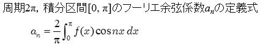

| --> |
/*数学の関数の定義には，演算子「:=」だけでなく，define関数も利用できる． しかし，この２つには，定義時に「式を評価しない／評価する」の違いがある．*/; |

| --> |
/*－－－－－－－－－－－－－－－－－－－－－－ 演算子「:=」を用いると，以降の計算がうまく行く例 －－－－－－－－－－－－－－－－－－－－－－*/; |
| (%i1) | f(x):= x; /*対象の関数の定義*/ |
| (%i2) | declare(n, integer)$ /*nを整数として定義*/ |
| (%i3) |
/*周期2π，積分区間[0, π]のフーリエ余弦係数a(n)の定義式*/ a(n):= 2 /%pi · integrate(f(x)·cos(n·x), x, 0, %pi); |
| (%i4) | a(0); /*まず，n=0に対して，a(n)の計算実行*/ |
| (%i5) | a(n); /*次に，a(n)の計算実行*/ |
| (%i6) |
/*－－－－－－－－－－－－－－－－－－－－－－ define関数を用いると，うまく行かない例 －－－－－－－－－－－－－－－－－－－－－－*/; kill(a); |
| (%i7) |
/*周期2π，積分区間[0, π]のフーリエ余弦係数a(n)の定義式*/ define(a(n), 2 /%pi · integrate(f(x)·cos(n·x), x, 0, %pi)); |
| (%i8) | a(0); /*上の結果にn=0を代入して，0割りが発生し，計算エラー．*/ |
| --> |
/*－－－－－－－－－－－－－－－－－－－－－－－－－－－－－－ 【説明】 「:=」の場合，定義時に右辺の積分が実行されないので， 「a(0);」とした場合，まず，被積分関数にn=0を代入した後に， 積分が実行されるので，計算が正しく行われる． 一方， define関数の場合は，nの場合分けを行わずに，定義時に積分が実行 されてしまい，その結果，分母にnが現れ，n=0を代入すると，0割りが 発生して，計算エラーになる． 場合分けが発生するような式を定義する際は，define関数を用いずに， 「:=」で定義しなければならない． －－－－－－－－－－－－－－－－－－－－－－－－－－－－－－/* |
Created with wxMaxima.
The source of this Maxima session can be downloaded here.